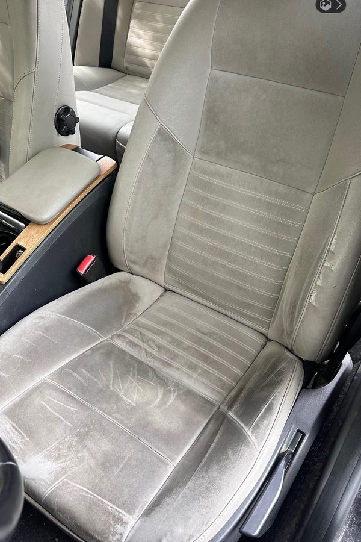
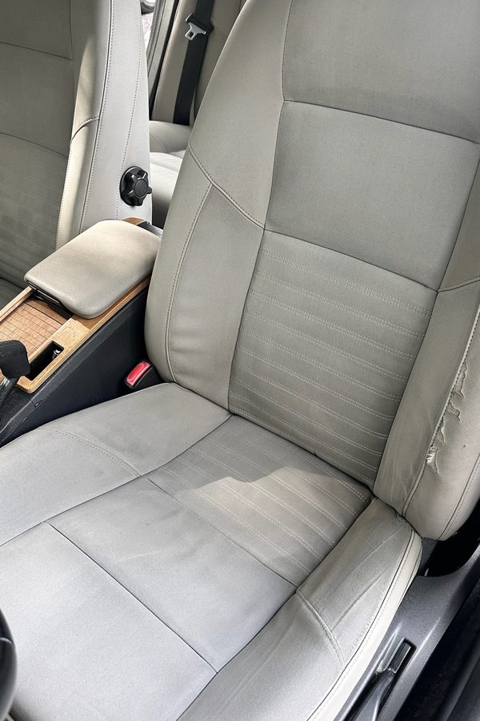

Des transformations concrètes réalisées à Rennes et ses alentours. Glissez le curseur ou comparez les photos : voici ce que MyClean peut faire pour votre véhicule et vos canapés.
Automobile
Nettoyage intérieur voiture
AvantAprès
Banquette arrière Sable et saletés éliminés
AvantAprès
Tableau de bord Plastiques ravivés et console assainie
AvantAprès
Habitacle cuir Sièges nettoyés et nourris


AvantAprès
Siège conducteur — tissu encrassé Taches et salissures éliminées en profondeur